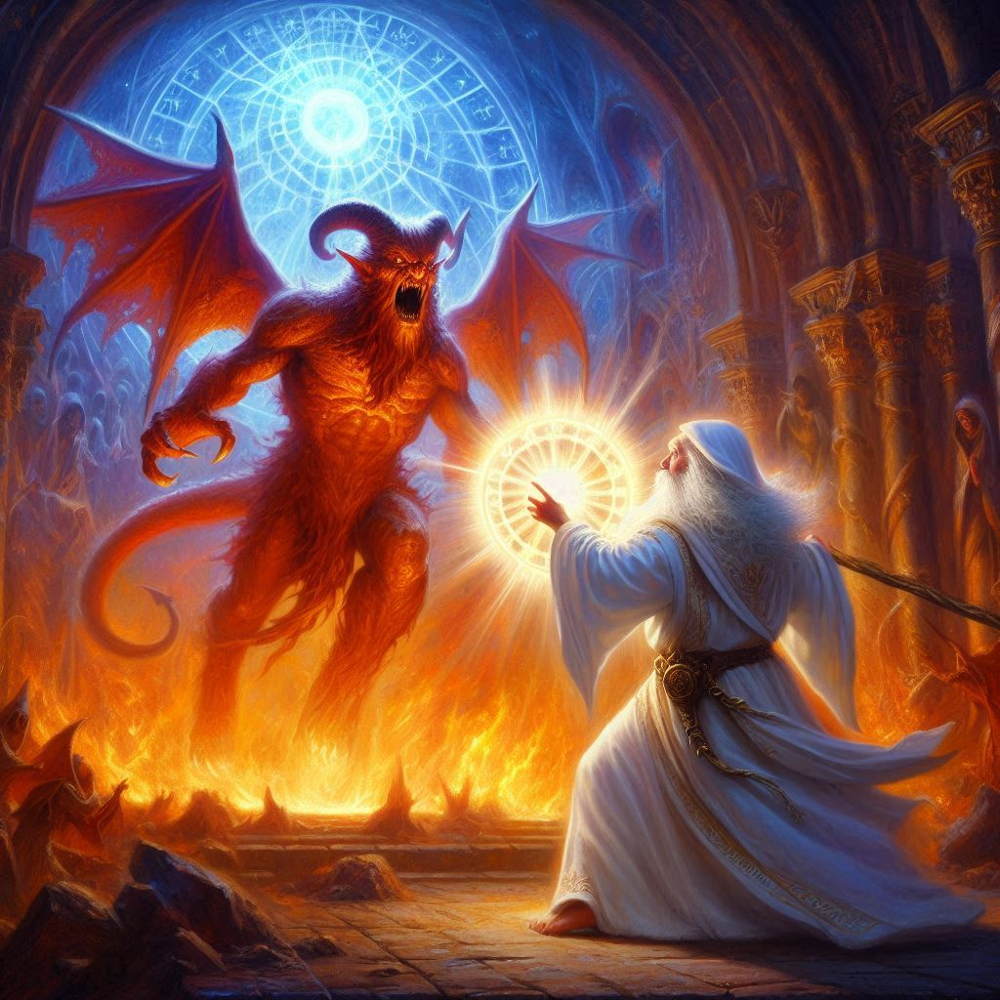
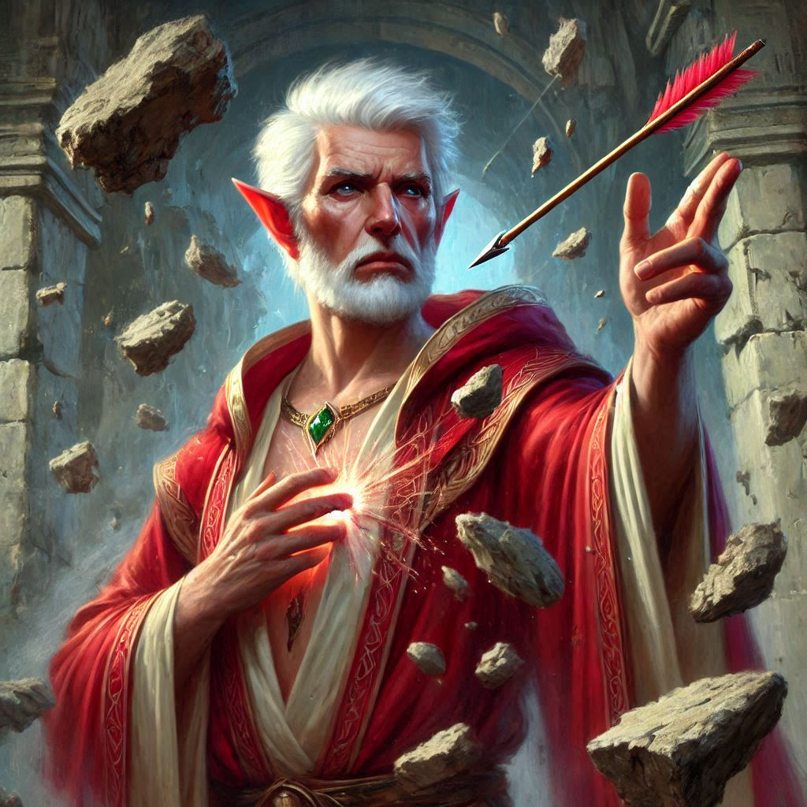
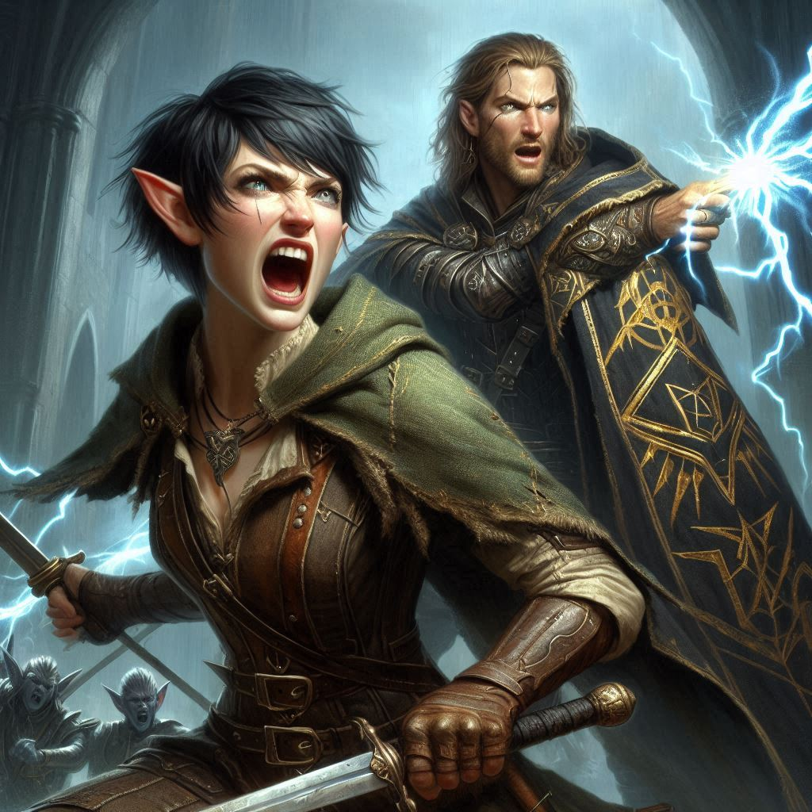
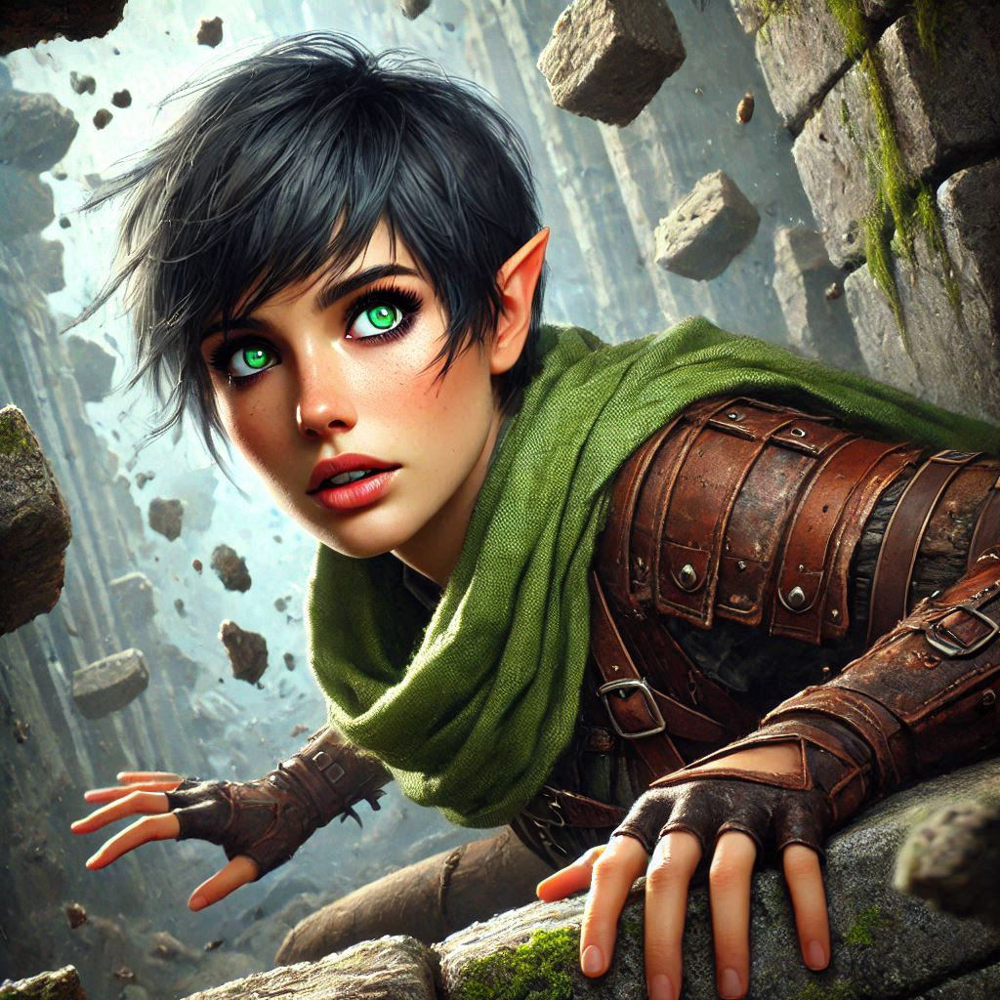

The Power of Adonais
You clutch your sword, the cold weight of it grounding you as the shadows of the dark fortress swirl around you. Elias is at your side, his knuckles white on his bowstring, eyes locked on the looming figure before you. Varis, the Minister of Trade—or rather, the dark elf prince—stands at the center of the room, his short silver hair whipping about and his crimson robes billowing like the fires of Baider’s forge. Behind him, the glowing portal to the The Nine Hells swirls ominously, its edges shimmering with the dark magic of Yaldaboath.
Onyx, weak but still defiant, lies shackled in the center of the chamber, his skin pale against the stone floor. His eyes meet yours with a silent plea, but it’s not for rescue. It’s for something more. You know what must happen. The realization sinks into your chest like a stone.
"I knew someone would come," Varis hisses, his voice a low rasp, tinged with amusement. "But you, Kira Coldspring, you’re unexpected. A half-elf ranger with no idea of the forces she meddles with."
You wonder how the Minister of Trade, a high-ranking official and a dark elf prince knows you by name. It should have unnerved you, but no matter. You step forward, unshaken. "You’re the one meddling, Varis. You won’t open that portal, not while I’m standing here."
Varis grins, his sharp teeth glinting in the dim light. "You think you can stop me? You’re nothing but a fly buzzing near a fire."
Suddenly, the walls tremble as the magic of the portal pulses. From its depths, a monstrous figure begins to form, flickers of Yaldaboath’s demonic essence seeping through. It feels as though the air is being sucked from the room, and you can barely catch your breath.
Elias draws his bow, the point of his arrow trained on Varis, but you know it's not enough. Not against this. Varis raises his hand, dark energy swirling at his fingertips, ready to unleash hell upon you. But before he can strike, Onyx coughs, his voice hoarse but commanding.
"Stop this madness," Onyx says, struggling against his chains. His voice is no longer the voice of an old dwarf—it echoes with a power you’ve never heard before. "Yaldaboath will consume us all."
Varis laughs, cruel and sharp. "That’s the idea."
But then, something shifts in Onyx. His eyes glow with an otherworldly light as he pushes himself to his knees. "You don’t understand," he growls, his voice transforming. "I am Adonais, Archon of the Light. And I will not let this happen."
You freeze as Onyx—no, Adonais—raises his shackled hands and a radiant aura surrounds him, bright as the sun. It sears through the darkness like a blade through shadow. The light burns Varis’s skin, and he screams, stumbling backward, his dark magic faltering. You watch in awe as the true nature of the dwarf you’ve known all your life is revealed. Adonais, the last Archon, a being of pure light, has been hiding in plain sight, and now he is ready to sacrifice everything.
“You lie!” Varis shrieks, shielding his face. “A feeble old dwarf! Adonais? You will pay for your mockery!!”
The portal behind him surges, the outline of Yaldaboath’s claw reaching through, as if the demon lord senses his summoning. Adonais stands, his voice steady, but tinged with sorrow. "There is only one way to stop this."
Adonais turns his glowing eyes on you, and the weight of his words crushes your heart. "I must seal the portal... from the inside."
"What?" you exclaim, stepping forward. "You’ll die!"
"It’s the only way," Adonais says, his voice calm with the resolve of someone who has known his fate all along. "If I do not close this gateway, Yaldaboath will enter our world. I cannot allow that."
Before you can respond, Adonais strides forward, entering the portal. Varis screeches in rage, his magic surging in a desperate attempt to stop the Archon, but it’s too late. Adonais steps into the swirling vortex of darkness, and the portal collapses behind him with a deafening boom. The connection to the Shadow Realm shatters, and Yaldaboath’s presence vanishes like smoke on the wind.
For a moment, all is silent. Quiet before the storm, you think as you survey Varis and the hoard of dark elf warriors flanking him. With the fury of the damned, Varis screams a terrible tirade of curses into the chamber of the temple of Umbra’Thal, his eyes burning with dark magic as he levels his gaze at you. "You, ranger, and your pathetic friends, will suffer for this outrage!"
Elias lets his arrow fly. Its deadly shaft sinks into Varis’s heart, or so it appears at first glance. But then you realize the missile did not penetrate the evil wizard– it disintegrated as it slammed into the magic shield surrounding the elf prince...
Varis hurls a curse at Elias, blasting the ranger off his feet and sending him through the air. Elias hits the far wall hard enough to knock him unconscious, his limp body falling ungracefully to the stone floor.
You draw your sword, but before you can move, another portal in the chamber flashes with dazzling light, ripping a hole in the fabric between worlds. You spin, shielding your eyes, and see a figure cloaked in darkness emerge through the blinding light. Jorsh.
"Get down!” Jorsh calls, immediately making eye contact with you.
You watch in horror as Varis sends a wall of lethal energy darts at Jorsh. With a sneer and a wave of his hand, Jorsh freezes the darts in mid-air and disperses their deadly energy in all directions. You dive to the floor as the darts fly over your head and blast through the first line of dark elf warriors flanking Varis. Shards of dark energy hit the walls of the temple with a thunderous crash, sending a shower of debris down on the occupants of the sanctum of evil. You cover your head with your arms as you are pelted with an array of rocks and pebbles.
You look up and see Jorsh and Varis engaged in a wizards’ duel, both firing curses at each other, filling the chamber with flashes of light and smoke. One particularly brazen dark elf is approaching Jorsh with his evil sword poised for a deathblow to your old friend. Instinct takes over and you hurl your short sword through the air just as the dark elf’s blade is about to strike. Jorsh’s magic overtakes Varis, knocking the elf prince to the ground, unaware as your sword sails past his head. The blade penetrates the helmet visor of the dark elf beside Jorsh. Surprised, Jorsh watches as the lifeless body of the dark elf falls to the ground at his feet.
“Kira!” Elias calls. “The temple is crumbling! We have to get through the portal back to Hemlock caverns now!”
You look at Elias with admiration as he battles three dark elves on his own, keeping them at bay as he navigates slowly toward the portal to Hemlock Caverns. A large chunk of the ceiling falls and lands between the two of you with a thunderous crash. Elias is right. The entire temple is coming down. If you don’t leave now, you will most likely be trapped in the Shadow Realm forever.
You whirl around as you hear Jorsh scream in pain. His battle with Varis is ongoing and it seems that the evil elf prince has the upper hand. Varis laughs maniacally as he shouts another round of lighting bolts at Jorsh from his outstretched finger. Jorsh is blown backward toward the portal to the Nine Hells. You realize that Varis is trying to send him into the netherworld as an unwilling sacrifice to Yaldaboath.
You hope that Onyx has destroyed the demon on the other side of the portal, but watching Jorsh suffer is more than you can bear.
“Kira,” Jorsh calls out, his eyes filled with pain. “I can bring down the temple and destroy the portals, but you must get out now if you want to survive!”
“I won’t leave you, Jorsh,” you cry. “Together we can beat Varis!”
“Maybe,” Jorsh says, struggling to his feet. But just then, Varis hits him with another blast of lightning. Jorsh stumbles backward, teetering on the threshold of the portal to the Nine Hells.